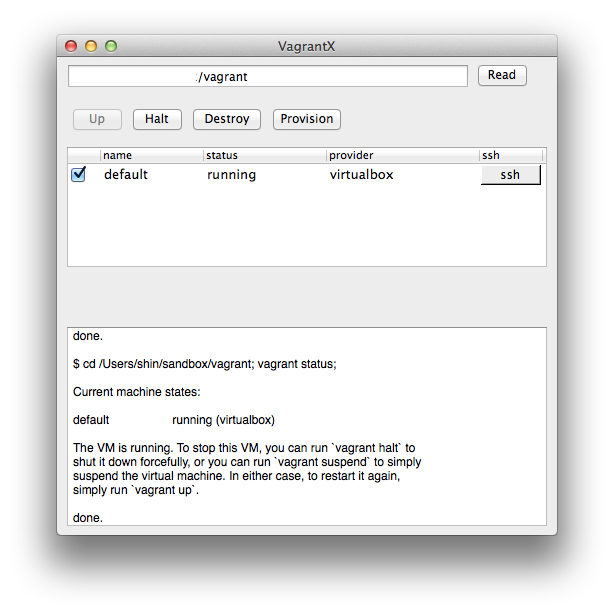
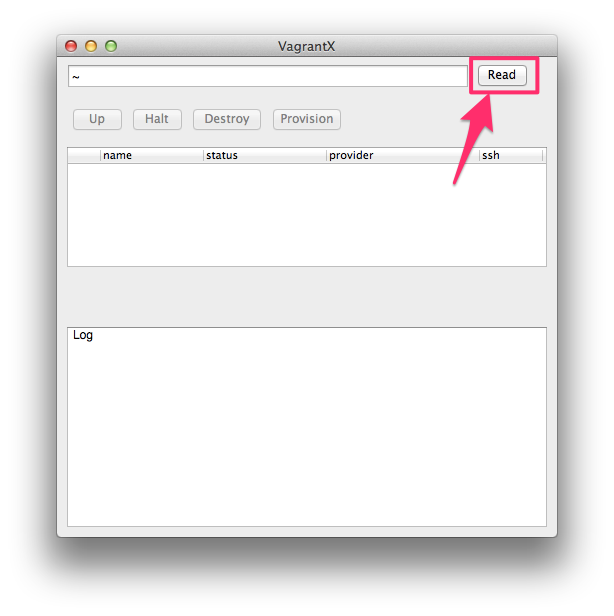
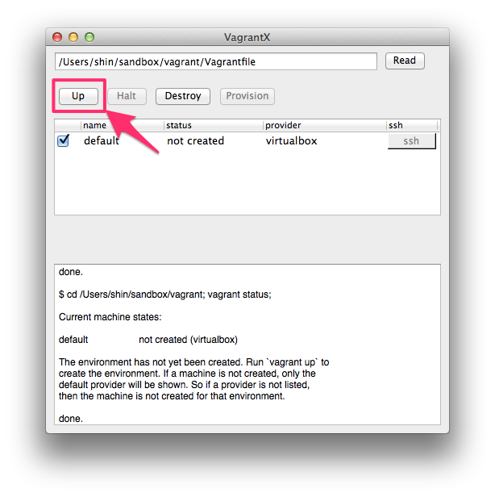
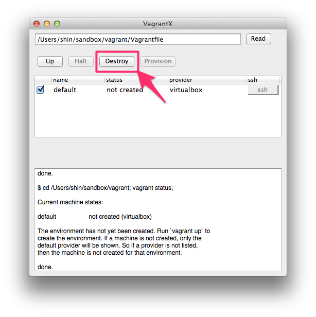

2014/05/28: v0.2.0 release.

1. Choose Vagrantfile

操作するVagrantfileもしくはVagrantfileがあるディレクトリを選択して下さい。
2. Vagrant Up

Upボタンをクリックすると仮想マシンが起動します。
3. Vagrant Destroy

Destroyボタンをクリックすると仮想マシンを停止して、破棄します。
Requirements
- Mac OS X 10.8 (Mountain Lion) / 10.9 (Mavericks)
- Vagrant
- VirtualBox ( or other VM )
Usage
- vagrant up
- vagrant halt
- vagrant destroy
- vagrant provision
- vagrant ssh